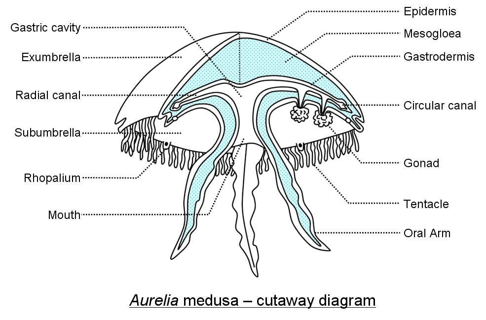

ANATOMY & PHYSIOLOGY
Jellyfish have very simple anatomy compared to many other animals. They are invertebrates, meaning they do not have a backbone. In fact, jellyfish do not have any bones! They also do not have brains. There are many species of jellyfish that have a variety of different characteristics; however they all have some things in common.
All species of jellyfish have a bell. This is the dome or disc shaped flabby part at the top of the jellyfish. Dangling from the bell are the jellyfish's tentacles, covered in venomous nematocysts, that sting anything that touches them. In addition to their stinging tentacles, jellyfish also have oral arms, which are specialized tentacles used to draw food into the animal's mouth. Jellyfish only have one opening in their bodies, so the food goes in through the mouth, it is digested inside the gastric cavity, and the waste is expelled back out of the mouth.